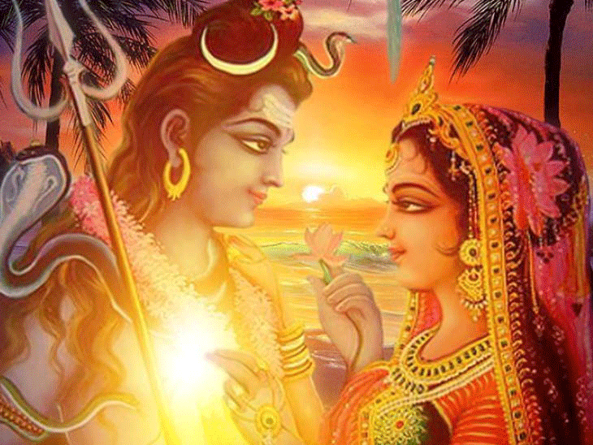

Diwali, also known as the Festival of Lights, holds immense significance in Hindu culture, celebrated with lights, joy, and the sharing of sweets. The history of Diwali is deeply rooted in the epic story of the Ramayana, which recounts the life and adventures of Lord Rama. According to legend, Lord Rama, the prince of Ayodhya, was the son of King Dasharatha and Queen Kaushalya. He was known for his virtues, wisdom, and dedication to dharma, or righteousness.
The story begins when Rama, his wife Sita, and his devoted brother Lakshmana were sent into exile for 14 years due to a series of political events in the kingdom of Ayodhya. During this time, the demon king Ravana, who ruled the land of Lanka, abducted Sita and took her to his kingdom. This act of evil set the stage for an epic battle. Rama, determined to rescue Sita, formed an alliance with Hanuman and the Vanara army, leading them on a courageous journey to Lanka.
The Ramayana tells how Rama and his allies, with the unwavering devotion of Hanuman and the strategic prowess of Sugriva, defeated Ravana in a climactic battle. After the victory, Rama and Sita, along with Lakshmana, began their journey back to Ayodhya. News of their return filled the citizens of Ayodhya with joy and excitement. In their honor, the people of Ayodhya lit oil lamps and decorated the city streets with flowers and rangoli, turning the night into a luminous celebration of light.
The lights of Diwali symbolize the victory of good over evil, hope over despair, and the end of Rama's long exile. Each year, Hindus celebrate Diwali by lighting lamps and diyas to honor Rama's return to Ayodhya and the values he represents. Diyas, or oil lamps, are placed around homes, courtyards, and temples, filling the darkness with a warm and gentle glow. Fireworks, sweets, and gatherings with loved ones add to the joyful festivities of the holiday.
The essence of Diwali is not only in the lights and celebrations but also in the values that the festival upholds. Rama's life exemplifies the ideals of truth, bravery, and unwavering faith. By celebrating Diwali, people reaffirm their dedication to these virtues and reflect on their own lives, seeking to remove darkness from their hearts and minds.
Today, Diwali has grown beyond its origins, celebrated by people of all ages and backgrounds across the globe. The festival brings families together, inspiring compassion and joy, and symbolizing the triumph of light and love. Diwali continues to remind us of the timeless power of goodness, community, and the importance of nurturing light within ourselves and spreading it to others.